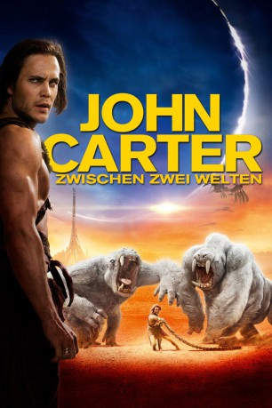

Alternativ: John Carter
 
 IMDB-Wertung: 6.6 / 10
IMDB-Wertung: 6.6 / 10  Metascore:
Metascore: 
Der Bürgerkriegs-Veteran John Carter findet sich eines Tages plötzlich und aus unerklärlichen Gründen auf einem fremden Planeten wieder. Er stellt fest, dass dieser Planet, den die Einheimischen Barsoom nennen, der Mars ist. Barsoom beherbergt die unwahrscheinlichsten, fremdartigsten Kulturen und Lebewesen, droht aber durch eben diese unterzugehen. Denn zwischen den Kulturen und Völkern herrscht ein erbitterter Krieg. Auf seinen Reisen durch diese Welt begegnet Carter vielen verschiedenen Gestalten, wie auch dem charismatischen Anführer Tars Tarkas und der wunderschönen, selbstbewussten Prinzessin Dejah Thoris. Carter weiß, dass das Überleben dieser Welt und ihrer Bewohner auch von ihm abhängen...
Jahr: 2012
Dauer: 132 Minuten
FSK: 12
Land: USA Studio: Walt Disney Studios Motion PicturesTonspuren: DTS - ,
Untertitel:
Auflösung: 1080p (1920x800) Größe: 8335 MB
Genre: Action, Abenteuer, Fantasy, Sci-Fi
Regisseur:  Andrew Stanton
Andrew Stanton
Drehbuch: Andrew Stanton, Mark Andrews, Michael Chabon, Edgar Rice Burroughs
Soundtrack: Michael Giacchino
Darsteller:
Datei: X:\2012(G-M)\John Carter Zwischen zwei Welten (2012, FSK12, 1920x800) 3D.mkv seit 26.10.2015
Festplatte: HD 2012(A-M)
 Es gibt insgesamt 112 Filme in der Gruppe '2012(G-M)'
Es gibt insgesamt 112 Filme in der Gruppe '2012(G-M)'